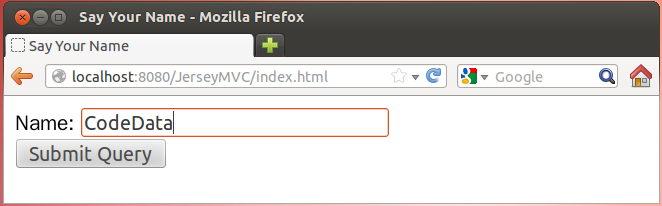
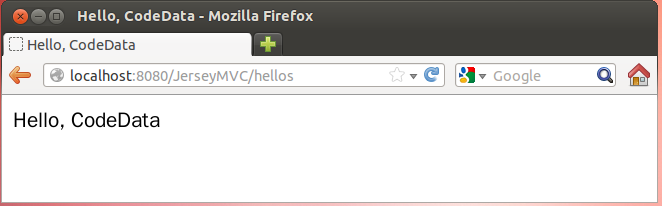

Java Tutorial 第六堂（1）REST 與 JAX-RS << 前情
在 Java Tutorial 第六堂（1） 中處理請求的方法，傳回值都是
String，實際上，可以是自定義的型態，詳情可以參考〈Java 與 REST 的邂逅（二）JAX-RS 核心 Annotation〉 的介紹。
Jersey 本身定義了一個
Viewable 類別，可以做為請求處理方法的傳回型態，Viewable 的實例可以攜帶方法的執行結果，並交由指定的畫面元件去處理，因而可用來實作 MVC/Model 2 架構，以下來模彷 Java Tutorial 第四堂（1）使用 spring-webmvc 框架 中的練習 11，使用 Jersey 來實作具有 MVC/Mode 2 架構的應用程式。
練習 19：使用 Jersey 實作 MVC/Model 2 在 Lab 檔案中，有個 exercises/exercise19/JerseyMVC 目錄，其中已預先建立好 build.gradle、src 下基本的目錄與資源。請在 src/main/webapp/WEB-INF/ 下建立 web.xml，內容如下：
<?xml version="1.0" encoding="UTF-8"?>
<web-app version="3.0" xmlns="http://java.sun.com/xml/ns/javaee"
xmlns:xsi="http://www.w3.org/2001/XMLSchema-instance"
xsi:schemaLocation="http://java.sun.com/xml/ns/javaee
http://java.sun.com/xml/ns/javaee/web-app_3_0.xsd">
<filter>
<filter-name>jersey</filter-name>
<filter-class>org.glassfish.jersey.servlet.ServletContainer</filter-class>
<init-param>
<param-name>jersey.config.server.provider.packages</param-name>
<param-value>tw.codedata</param-value>
</init-param>
<init-param>
<param-name>jersey.config.server.provider.classnames</param-name>
<param-value>org.glassfish.jersey.server.mvc.jsp.JspMvcFeature</param-value>
</init-param>
<init-param>
<param-name>jersey.config.server.mvc.templateBasePath.jsp</param-name>
<param-value>/</param-value>
</init-param>
<init-param>
<param-name>jersey.config.servlet.filter.staticContentRegex</param-name>
<param-value>/.*html</param-value>
</init-param>
</filter>
<filter-mapping>
<filter-name>jersey</filter-name>
<url-pattern>/*</url-pattern>
</filter-mapping>
</web-app>jersey.config.server.provider.classnames 設定了 org.glassfish.jersey.server.mvc.jsp.JspMvcFeature，表示我們將使用 JSP 作為呈現技術，jersey.config.server.mvc.templateBasePath.jsp 設定了 /，表示請求處理方法的回應要求的是 "hello"，就會使用 webapp 目錄中 "/hello.jsp" 做為回應。
因為 web.xml 中設定，只要是
/ 起始下的所有請求，都要交給 Jersey 的 ServletContainer 處理，然而有些靜態頁面，希望可以直接請求，因此設定了 jersey.config.servlet.filter.staticContentRegex，它的值可以是規則表示式（Regular expression），在這邊設定了，應用程式下 HTML 頁面可以直接請求。
接著請在 src/main/java/tw/codedata 中建立 Hellos.java 如下：
package tw.codedata;
import java.util.*;
import javax.ws.rs.DefaultValue;
import javax.ws.rs.POST;
import javax.ws.rs.Path;
import javax.ws.rs.FormParam;
import org.glassfish.jersey.server.mvc.Viewable;
@Path("/hellos")
public class Hellos {
@POST
public Viewable add(@FormParam("name") String name) {
Map model = new HashMap();
model.put("name", name);
return new Viewable("/add", model);
}
}我們設計
POST /hellos 為發送一筆表單資料，@FormParam 指定了將表單中 name 請求參數綁定至方法的 name 參數，Viewable 建構時接受一個 Map，Map 中每個鍵對應的值，可以在指定的 JSP 頁面中使用 ${it.keyName} 來取得，例如上例中，可以使用 ${it.name} 來取得發送的 name 請求參數。
請在 src/main/webapp 中建立一個 add.jsp 如下：
<%@page contentType="text/html; charset=UTF-8" pageEncoding="UTF-8"%>
<html>
<head>
<title>Hello, ${it.name}</title>
</head>
<body>
Hello, ${it.name}
</body>
</html>接下來，你就可以執行
gradle tomcatRunWar 指令，然後用瀏覽器請求 http://localhost:8080/JerseyMVC/index.html，你應該要可以看到以下的執行結果：
{kind=link}

{kind=link}
